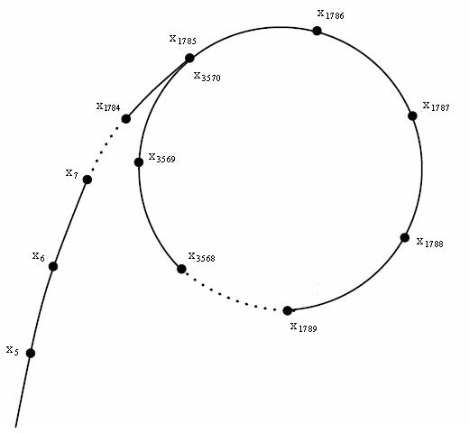

Pollard's Rho

- This is a not-very-sophisticated implementation of Pollard's Rho
- Pollard's Rho can be low time complexity, and very low space complexity
- (No guarantees about complexity with this code...)
- I can't guarantee handling 'perfect powers' well
- It's more probabilistic on those. An efficient algorithm here does exist
- Said algorithm is for perfect power detection / factoring, but beyond:
- My scope
- I believe, JavaScripts's Math library
- Maximum N is 9007199254740991 - JavaScript has a finite integer representation
- (To clarify: there is BigNum in recent js; however, a brief implementation with BigNum was failing on stack overflows for me.)